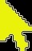

Usage Tips for the AFNI GUI --
Tip #1:
When the AFNI sunrise logo (shown above) is displayed in the square to right
of the 'done' button, this means that something is happening that might take
a long time (e.g., reading a big file). The AFNI GUI will not respond to clicks
or keystrokes during this time.
Contents
AFNI For Absolute Beginners
** Top **
To use AFNI, you must have some data stored in a format that the program understands.
- The major formats for which AFNI is programmed are:
- AFNI formatted datasets, in .HEAD and .BRIK pairs of files;
- NIfTI-1 formatted datasets, in .nii or .nii.gz files.
- The AFNI format contains more auxiliary information than the NIfTI-1
format; for example, the .HEAD file contains a history of the commands
used to create the dataset.
- When you start AFNI, any datasets in the current directory will be ready
for viewing. If there are no datasets to read, AFNI will pop up a
message. When this happens, you can do one of 2 things:
- Quit AFNI -- e.g., press the 'done' button twice -- then
change directory ('cd') to a directory with some datasets,
and restart AFNI (this is what I always do); or,
- Use the 'DataDir Read' button -- in the second column of the main AFNI
controller -- to navigate to a directory with some datasets.
When there is no data, AFNI creates a 'dummy' 3D dataset for you to look at,
if you want to play with the image viewers.
- To open an image viewer, click on one of the 'Image' buttons in the left
column of the main AFNI controller.
- Left-click in the image to move the crosshairs around.
- Click or click-drag in the slider below the image to change slice.
- The controls to the right of the image let you adjust the image
contrast, brightness, zoom factor, etc.
- The controls below the bottom of the image let you carry out various
operations on the image, such as saving to JPEG format, and making
a montage (array) of slice images.
- If a dataset has more than one 3D volume in it -- usually that means it
has a time axis, like an FMRI EPI dataset -- then you can use the 'Graph'
buttons to view an array of graphs of the voxel data time series.
- The crosshairs in the image viewer that corresponds to the graph
viewer -- e.g., the Axial image and graph viewers -- change to a small box
to indicate which voxels are the source
of the data time series in the graph array.
- The viewpoint of multiple image and graph viewers (the focus voxel at the
crosshairs) is always locked together -- Left-click in one image to move
the crosshairs, and all other open image and graph viewers will jump, too.
- Moving the time index in a graph viewer (by clicking in the central
sub-graph, or by using the 'Index' control in the main AFNI window)
will cause all the image and graph viewers to display at the new
time index.
- At any moment, you can have one underlay dataset (grayscale) and one
overlay dataset (color). To choose which datasets are visible, use
the 'UnderLay' and 'OverLay' button in the second column of the AFNI
controller.
- To control whether the color overlay is visible, click on the
'See OverLay' toggle button.
- To manage how the numbers in the overlay dataset are converted into
colors, click on 'Define OverLay' to open up a new control panel.
- The active underlay and overlay dataset names are shown in the title
bar of the AFNI controller window.
- Don't be afraid of the software! Experiment
with the controls.
- The popup hints will help.
- The button 'BHelp' will give you longer help about individual
buttons -- click on the BHelp button, then click on any AFNI
button to get a small text box
with more help than the simple popup hints.
- Sample datasets and all the AFNI course materials are in the big file
CD.tgz (more than 1 Gbyte) at
https://afni.nimh.nih.gov/pub/dist/edu/data
And don't forget the AFNI message board at
https://afni.nimh.nih.gov/afni/community/board
Cursor Shapes and Right-Click Popup Menus
** Top **
Normal AFNI cursor =

= Hidden menu cursor
On most systems, the X11 cursor used in AFNI is an orange arrow pointing
at about '10:30' on the clock face.
However, the arrow becomes yellow and points more steeply, to about '11:00',
when it is over a location that has a hidden Right-Click popup menu.
Some of these locations are
- Over the logo square just to the right of the 'done' button in an
AFNI controller.
- Over the labels at the top of the threshold slider and color bar in
the 'Define Overlay' control panel.
- On the label to the left of a drop-down 'option menu'; e.g., 'Xhairs'
or 'ULay' (for these menus, the cursor will not change shape).
- Over the color bar itself, when it is in continuous 'colorscale' mode
('**') -- but not when it is in discrete color panel mode.
- Over the image viewer main sub-window, which holds the image itself.
- Over the image viewer intensity bar, just to the right of the image.
- Over the 'Save' button in the image viewer.
- Over the 'crop' button in the image viewer.
- Over the sub-graphs in the time series dataset graph viewer
(pops up some statistics about the data in the sub-graph).
- Over the coordinate display in the upper left corner of an AFNI
controller.
- In the 'Render Dataset' plugin, over the 'See Xhairs' and 'Accumulate'
toggle buttons.
- The 'Accumulate' popup lets you enter a text label
to be drawn in the rendered image viewer -- the actual display of labels
(size and location) is controlled from the image viewer intensity bar
popup menu.
- Right-Click lets you change the label for newly rendered images.
- Shift+Right-Click lets you change
the label for all previously rendered images as well as new images.
- In the 'Clusters' report panel, right-clicking in the upper part of
the window (where the textual summary is), will let you choose how
the 'Histog' option will plot the histogram from the 'Aux.Dset'.
-
'Histog' is selected from the menu whose initial choice is 'Mean'.
Unfortunately (and nastily), some Linux systems don't allow a program to
change the mouse cursor shape. In such cases, this cursor-shape-change hint
in AFNI won't be there for you, and you'll just have to remember where these
popup menus are hidden.
Hidden Clicks to Activate AFNI Features
** Top **
Other 'special' AFNI clicks that aren't obvious:
- Left-clicking on the 'Image' or 'Graph' button for an already open
AFNI viewer will bring that viewer's window back up to the top of
the X11 window stacking order.
- Right-clicking on the 'Image' or 'Graph' button for an already open
AFNI viewer will bring that viewer's window over to the place where
you just clicked -- this is useful for retrieving lost viewers.
- Right-clicking on the 'DataDir' button in the AFNI controller will
un-hide (or re-hide) the obsolescent 'Define Markers' button.
- Left-clicking on the logo at the lower left of a graph viewer will
make the logo and menu buttons disappear -- this is intended to help
you make a clean-looking snapshot of the window. Left-click again
in the same region at the lower left to un-hide the logo and buttons.
- Right-clicking on the graph viewer logo or on the image viewer 'Disp'
button (i.e., the things at the lower left of each viewer window) will
bring the parent AFNI controller back to the top of the X11 window
stacking order.
- In an image viewer window, if you press-and-hold-down the Left mouse
button, then drag the cursor vertically and horizontally (while still
holding the Left button down), the contrast and brightness of the
grayscale underlay changes interactively as you move the mouse.
- When you release the mouse button, the other open image viewers
(if any) will have their contrast and brightness settings
changed to match the one you just played with.
- To exit AFNI quickly when multiple controllers are open, hold down the
Shift key when you press the 'done' button (in the main AFNI controller).
The usual requirement of pressing 'done' twice within 5 seconds is
skipped, and all AFNI controllers exit immediately.
- Left-clicking in the logo square to the right of the AFNI controller
'done' button will cause the AFNI splash screen to popup. You can
close the splash screen window again via the usual X11 controls on
the window border, or by left-clicking again in the logo square.
Keyboard Shortcuts: Image Viewer Window
** Top **
The AFNI image viewer has many keyboard shortcuts. Help for these can be
found by using 'BHelp' and then clicking on the image sub-window itself.
The shortcuts are used by putting the mouse cursor over the image sub-window
and pressing the keyboard key. Some of these shortcuts are equivalent to
various button presses, but a few keypresses -- such a 'v' (for video) -- do
things which cannot be done in any other way.
- a = fix window aspect ratio (= Left-click in intensity bar)
- c = enter cropping mode (= clicking the 'crop' button)
- D = open Disp control panel (= clicking the 'Disp' button)
- i = make the image sub-window smaller inside the overall viewer
- I = make the image sub-window larger
- l = left-right mirror image (= '+LR Mirror' on Disp panel)
- m = toggle 'Min-to-Max' on/off (= 'Min-to-Max' or '2%-to-98%' on Disp)
- M = open Montage control panel (= clicking the 'Mont' button)
- o = color Overlay on/off (= 'See Overlay' in AFNI controller)
- p = toggle panning mode (= clicking the 'pan' button)
- q = close window (= clicking the 'done' button)
- r = like 'v', but image 'rebounds' when it reaches end of count
- R = like 'r', but backwards order
- s = sharpen underlay image (= 'Sharpen' on the Disp control panel)
- S = save image (= clicking the 'Save' button)
- u = toggle background to be from Underlay or Overlay dataset
- v = automatically change images to make a 'video' (forwards order)
- V = same as 'v' but backwards order
- z = zoom out (= zoom down-arrow button)
- Z = zoom in (= zoom up-arrow button)
- [ = time index down by 1
- ] = time index up by 1
- { = lower AFNI statistical threshold slider
- } = raise AFNI statistical threshold slider
- > = PageUp = move forward one slice in image viewer
- < = PageDown = move backward one slice in image viewer
- # = toggle checkerboard pattern from underlay and overlay datasets
- 3 = turn checkerboard pattern off
- 4 = popup slider to 'wipe' horizontally between overlay and underlay datasets
- 5 = popup slider to 'wipe' vertically
- 6 = popup slider to 'meld' or 'fade' between overlay and underlay datasets
- Keyboard arrow keys:
- = move crosshairs (normal operation)
- = pan zoomed window (when 'pan' is on)
- Shift+arrow keys = pan cropped region around
- Ctrl+arrow keys = expand/shrink cropped region
- Home key = center zoomed window on current crosshair location
- Shift+Home = center cropped region on current crosshair location
- Del = undo in the Drawing plugin
- F2 = turn the Drawing pencil on
- F3 = subtract 1 from the Drawing plugin value
- F4 = add 1 to the Drawing plugin value
- F5 = Meltdown!
- F6 and higher are not (yet) defined.
Keyboard Shortcuts: Graph Viewer Window
** Top **
The AFNI graph viewer also has many keyboard shortcuts.
- a = autoscale the graphs (this one time)
- A = autoscale the graphs (every time they are redrawn)
- b = switch graph baseline mode (between Separate, Common, and Global)
- B = switch on/off Boxes graphs instead of line graphs
- g = decrease vertical grid spacing in graphs
- G = increase vertical grid spacing in graphs
- h = draw dotted horizontal line at zero level in graphs
- i = decrease graph 'ignore' level by 1
- I = increase graph 'ignore' level by 1
- l = move to last time point
- L = turn AFNI logo on or off (but why would you want it OFF?!)
- m = reduce matrix size of sub-graphs by 1
- M = increase matrix size of sub-graphs by 1
- q = quit = Opt->Done
- r/R = 'rebound' up or down in time
- S = save an image of the graph window to a file
- t = show text (numbers) instead of graphs
- v/V = 'video' up or down in time
- w = write data from central sub-graph to a 1D file
- z = change slice number by 1 downwards (= keyboard Page Down key)
- Z = change slice number by 1 upwards (= keyboard Page Up key)
- - = scale the graphs down (vertically)
- + = scale the graphs up
- 1 = move to first time point
- < or [ = move back in time by 1 point (= keyboard Left arrow)
- > or ] = move up in time by 1 point (= keyboard Right arrow)
- N = after typing the 'N', type a number, then press Enter;
the matrix of sub-graphs will change to the number given immediately
- F5 = Meltdown!
Keyboard Shortcuts: Threshold Slider
** Top **
Fine control over the threshold slider is hard with the mouse. You can
move the slider with the following keystrokes, after clicking in the
slider's 'thumb' to move the keyboard input focus to this control.
- Down arrow = reduce slider by 1 in the 4th significant place
- Up arrow = increase slider by 1 in the 4th significant place
- Page Down = reduce slider by 1 in the 3rd significant place
- Page Up = increase slider by 1 in the 3rd significant place
- Home = drop slider to 0
- End = move slider to top
The Left and Right arrow keys can similarly be used in the image viewer
slice index slider to move 1 slice backward or forward at a time.
Locking Controllers Together
** Top **
AFNI controllers are labeled by letters in the window title bars;
the first one is [A], the second one is [B], and so on. You use
the 'New' button in the lower left corner to open a new AFNI controller.
You close an AFNI controller (and all of it child viewer windows)
with the 'done' button, or with the windowing system's controls.
Multiple AFNI controllers can have some
of their viewing controls locked together, so that changing an item
in one controller changes the same item in the other one.
To be less mysterious, here are the different items that can
be locked, some via the use of Unix environment variables:
- AFNI_ALWAYS_LOCK:
Crosshair xyz-coordinates: this feature is turned on by
default, so that clicking in a viewer window (image or graph)
in one controller causes ALL windows in all controllers to
jump to the same focus location. If you want the viewers
belonging separate controllers to operate independently,
set this variable to NO.
- On the 'Define Datamode' control panel, at the
bottom is a menu labeled 'Lock'. This menu lets
you micro-manage some details about how the
lock between controllers is enforced.
- You can exempt some controllers from being locked
by clicking OFF their toggle buttons on this menu.
- You can have the time indexes of different controllers
also be locked by clicking ON the 'Time Lock' toggle button.
- You can lock spatial coordinates by the voxel 3D ijk-indexes
(rather than xyz-coordinate) by clicking ON the 'IJK Lock'
toggle button.
- AFNI_THRESH_LOCK:
This variable is used to lock the Define Overlay threshold
sliders together. There are 3 values that you can use:
- NO = each controller's slider is independent
- YES = the numerical value on the sliders are locked
- P-VALUE = the p-value for the sliders are locked
When you drag a threshold slider, the other ones will only
change when you release the mouse button -- they don't slide
together, but will just jump to the final value.
- AFNI_PBAR_LOCK:
If this variable is set to YES, then the DEFINE OVERLAY
color bars (the "pbars") will be coordinated. Changes to
one pbar will be transmitted to the other controllers.
- AFNI_RANGE_LOCK:
If this variable is set to YES, then the OLay range values of
different AFNI controllers that are Lock-ed together will be
coordinated. Changes in one controller will be reflected in
the others immediately.
- AFNI_SLAVE_THRTIME:
When the underlay and overlay datasets both are time-dependent, switching
the time index will change both the underlay and overlay sub-bricks, but
NOT the threshold sub-brick. If you want the time index control to change
the threshold sub-brick also, then set this variable to YES.
- AFNI_SLAVE_FUNCTIME:
When the underlay and overlay datasets both are time-dependent, switching
the time index will change both the underlay and overlay sub-bricks. If
you want the time index control to change ONLY the underlay sub-brick,
then set this variable to NO.
- AFNI_SLAVE_BUCKETS_TOO:
Set this to YES if you want to make changing the time index in the underlay
dataset change the sub-brick index in the overlay dataset even when the
overlay is a 'bucket' dataset without a time axis (e.g., TR is undefined).
- Right-click popup menu above slider: item 'Thr = OLay+1 ?'
If you click this toggle button ON, then changing the OLay sub-brick index will cause the
Thr sub-brick index to change the the OLay index plus one. This feature is to make it
easy to navigate through 3dDeconvolve or 3dREMLfit output datasets, where each beta
fit coefficient is immediately followed by its t-statistic.